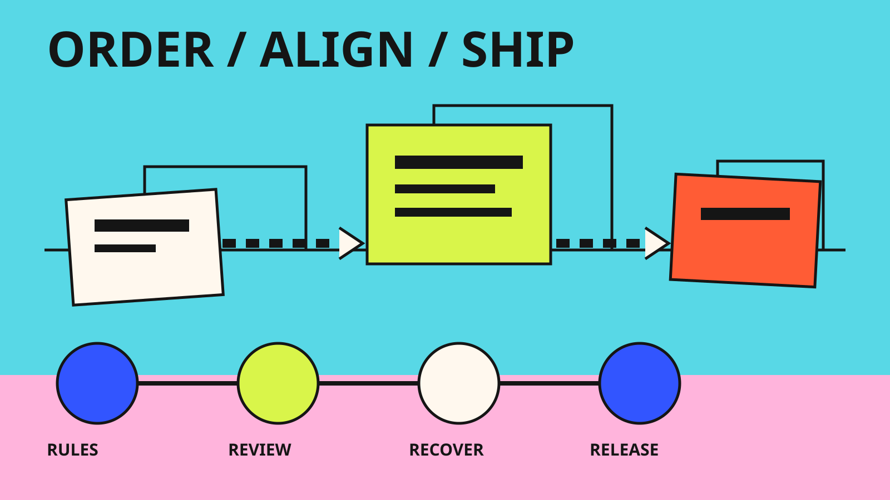

Model users, rules, and failure
Turned fuzzy requirements into order types, lifecycle states, decisions, commercial rules, connected workflows, and failure states.
Case 01 · Shipped · 2022–2024
I owned the design of the ordering platform that partners and operations teams now use, taking it from fuzzy requirements through research, UAT, pilot, and GA, and helping retire two legacy tools along the way.

Partners and operations teams worked across agreement types, product rules, credits, and legacy tools. One ordering error could ripple into licensing, billing, operations, and customer trust. The goal: a modern path that cut friction and manual touch, kept every commercial rule correct, and made legacy retirement possible.
I owned the experience end to end: the user and system model, information architecture, flows, content and states, research partnership, design reviews, handoff, UAT and pilot support, accessibility, and issue resolution. Product, engineering, and research were close partners throughout.
Scope: Phases 1 and 2, product discovery and hero search, step-ups and additional products, non-EA, split and multi-order, and connected credit, rebill, and transfer needs.
Turned fuzzy requirements into order types, lifecycle states, decisions, commercial rules, connected workflows, and failure states.
Cognitive walkthroughs examined product finding, terminology, status, scenario distinction, and recovery.
Skipped a separate journey for every backend rule. Progressive disclosure and role-specific states served partner and operations needs.
Worked through hero search, split and multi-order, non-EA, step-ups, additional products, states, and connected credit patterns.
Specifications carried intent, states, content, edge cases, accessibility, and acceptance criteria through walkthroughs, UAT, pilot, bug bash, and fit-and-finish.
Adoption, task time, support, incidents, and feedback each told part of the story, and fed a must-fix list after launch.
Keep every order correct without burdening every user with every order type.
Walkthroughs showed people search by intent, so hero search follows intent instead of backend structure.
One order carries different permissions, decisions, and exception needs for each role.
Shared patterns cut context switching and made one combined experience, not two products.
Be firm about the user outcome and flexible about implementation.
Partner Orders and Contracts reached GA on 12 February 2024, with pilot training and documentation review complete.
The combined Orders and Credits experience went live and supported the retirement of two legacy tools.
Phase 2 pilot adoption rose 32% in one week (May 2024). Non-EA adoption reached 80% within 30 days.
About 60% more efficient ordering, over 50% on upgrades and additional products, and over 70% better multi-order agility.
Engineering leadership credited me with shaping the platform under tight time, and with turning healthy disagreement into better design (June 2024).
Efficiency and adoption figures are from my 2024 performance review.